The seven built-in kits
Five sampled acoustic kits recorded from real drums, and two generated electronic kits.
- Open the Kits tab. Studio (the default), Jazz Club, Vintage, Brushes and Heavy are sampled with several velocity layers and round-robins; Vintage Machine and Lo-Fi are synthesised.
- Tap ▶ on a kit to hear it.
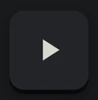
- Change a song's kit in the Song Editor. Settings → Credits lists every kit's author and licence.

Import an SFZ or Hydrogen kit
Bring your own multisampled kit.
- Kits → ↑ (Import kit), then pick a Hydrogen
.h2drumkitor a zipped SFZ kit.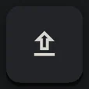
- The preview shows the kit's name, licence and each detected instrument with ▶. Sounds it couldn't place are in a Needs a slot list: assign them.
- IMPORT KIT. The kit editor then lets you play and mix each slot, and shows an import report.
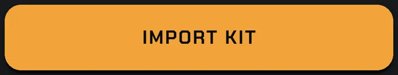
Imported kits are for your own use on your phone; songs you share refer to them by name only.

Browse free kits
A public list of free kits, with licences up front.
- Kits → Browse free kits. Filter by licence and velocity layers.
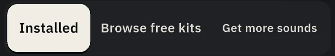
- Tap ↓ on a kit; it downloads in your browser. Then import the file with ↑ as above.
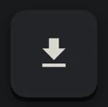
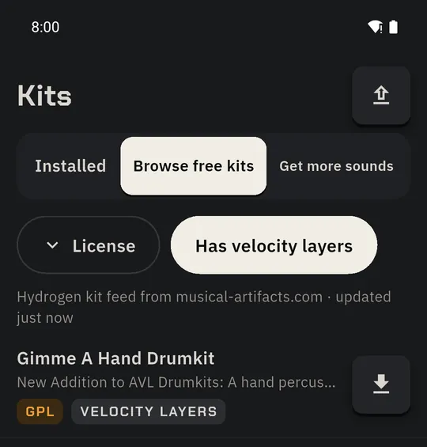
Freesound with your own key
600,000+ free sounds. About two minutes to set up, and the key never leaves your phone.
- Kits → Get more sounds → GET MORE SOUNDS → SET UP FREESOUND.
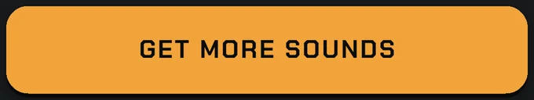
- CREATE FREESOUND ACCOUNT, or I ALREADY HAVE ONE.
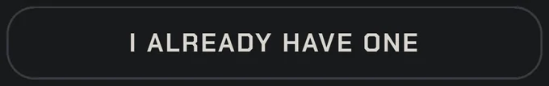
- Open the key form; copy the three values the app shows into it.
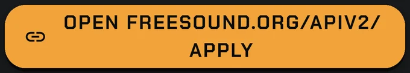
- Back in the app, Paste the key, then CHECK KEY. A green “Key works” means you're done.
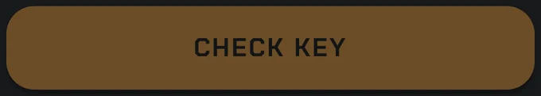
- Now search per kit slot (Snare suggests “snare one shot”), ▶ preview, and Use to fill the slot. CC0 only by default; switch on CC-BY if you like. Credits are written for you.
Non-commercial sounds are never offered. Remove the key any time in Settings → Freesound.

Output presets, split output, Bluetooth
Sound right on headphones, a phone speaker or a PA.
- Settings → Audio & output.
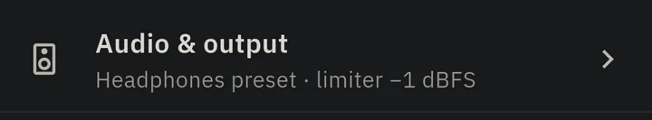
- Pick a preset: Headphones, Phone speaker, Small BT or PA / amp. Then tweak low-cut, EQ and the gentle bus compressor. A limiter is always on to protect the PA.
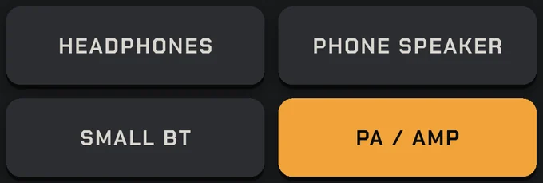
- Split: drums L · click R sends the click to one ear for in-ear monitoring.
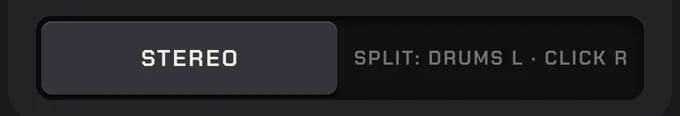
- On a Bluetooth speaker the app warns once about delay; Bluetooth delay compensation lines up Band view and your taps.
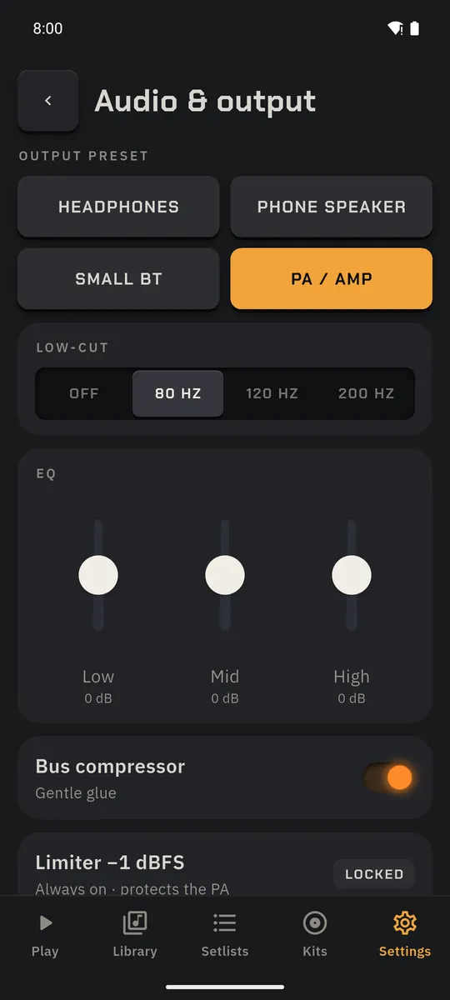